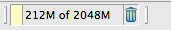
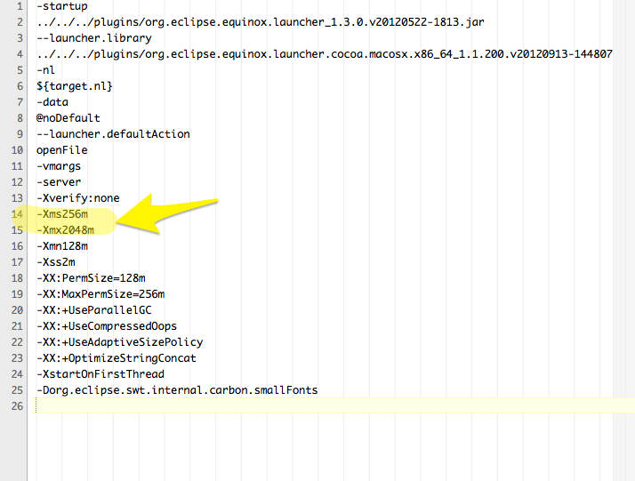
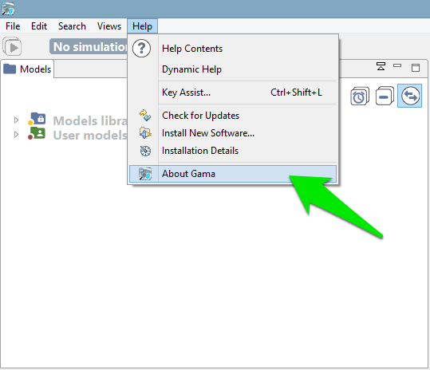
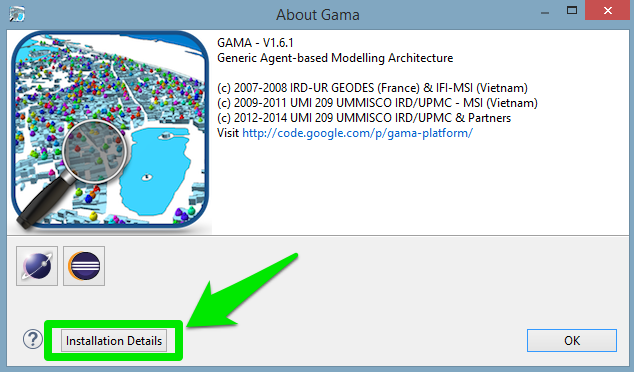
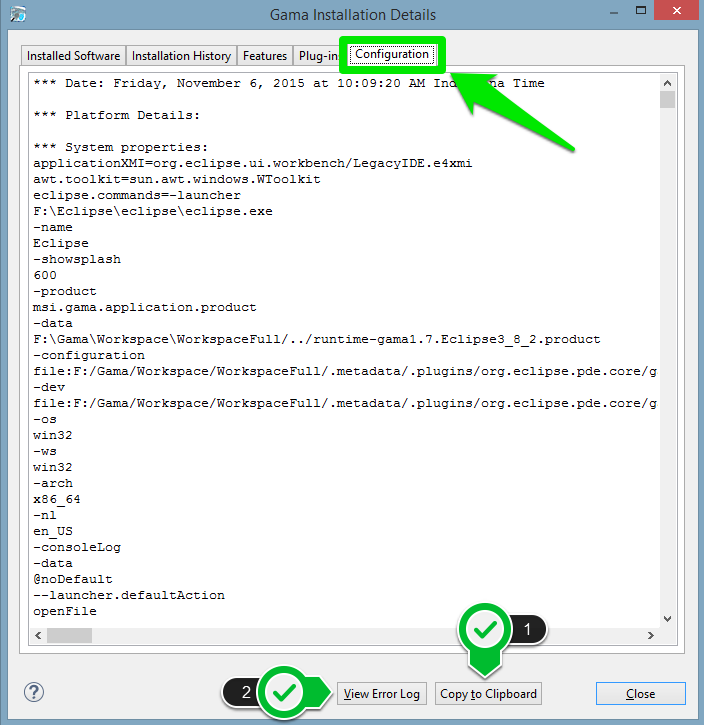
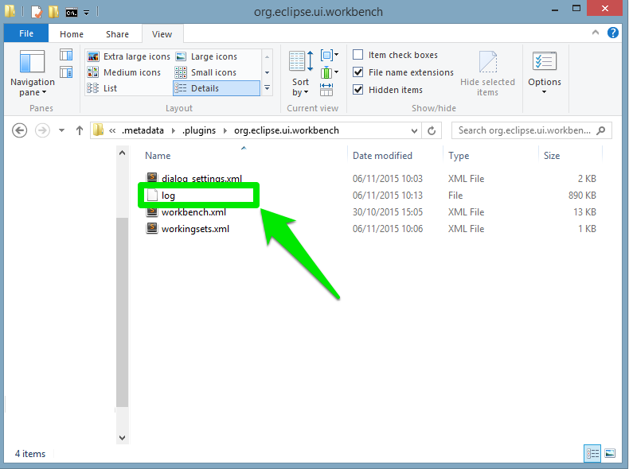

This page exposes some of the most common problems a user may encounter when running GAMA — and offers advices and workarounds for them. It will be regularly enriched with new contents. Note also that the Issues section of the website might contain precious information on crashes and bugs encountered by other users. If neither the workarounds described here nor the solutions provided by other users allow to solve your particular problem, please submit a new issue report to the developers.
In case GAMA crashes whenever trying to display a web page or the pop-up online documentation, you may try to edit the file Gama.ini and add the line -Dorg.eclipse.swt.browser.DefaultType=mozilla to it. This workaround is described here: http://bugs.debian.org/cgi-bin/bugreport.cgi?bug=705420 and in Issue 700 (on Google Code).
If, when selecting a menu, nothing happens (or, in the case of the ‘Agents’ menu, all population submenus appear empty), it is likely that you have run into this issue: https://bugs.eclipse.org/bugs/show_bug.cgi?id=330563. The only workaround known is to launch GAMA from the command line (or from a shell script) after having told Ubuntu to attach its menu back to its main window. For example (if you are in the directory where the “Gama” executable is present):
export UBUNTU_MENUPROXY=0
./Gama
No fix can be provided from the GAMA side for the moment.
No common trouble…
The only problems reported so far on MacOS X (from Lion to Yosemite) concern visual glitches in the UI and problems with displays, either not showing or crashing the JVM. Most (all ?) of these problems are usually related to the fact that GAMA does not run under the correct version of Java Virtual Machine. In that case, follow these instructions to install the correct version.
For some particular configurations (in particular some particular graphic cards), the icons of the menus (e.g. Edit menu) may be corrupted. This bug is documented for all RCP products under El Capitan. See these references: https://bugs.eclipse.org/bugs/show_bug.cgi?id=479590 https://trac.filezilla-project.org/ticket/10669
These is nothing we can do now except using the workaround that consists in switching the language of the OS to English (in System Preferences, Language & Region).
The most common causes of problems when running GAMA are memory problems. Depending on your activities, on the size of the models you are editing, on the size of the experiments you are running, etc., you have a chance to require more memory than what is currently allocated to GAMA. A typical GAMA installation will need between 40 and 200MB of memory to run “normally” and launch small models. Memory problems are easy to detect: on the bottom right corner of its window, GAMA will always display the status of the current memory. The first number represents the memory currently used (in MB), the second (always larger) the memory currently allocated by the JVM. And the little trash icon allows to “garbage collect” the memory still used by agents that are not used anymore (if any). If GAMA appears to hang or crash and if you can see that the two numbers are very close, it means that the memory required by GAMA exceeds the memory allocated.

There are two ways to circumvent this problem: the first one is to increase the memory allocated to GAMA by the Java Virtual Machine. The second, detailed on this page is to try to optimize your models to reduce their memory footprint at runtime.
To increase the memory allocated, first locate the file called Gama.ini. On Windows and Ubuntu, it is located next to the executable. On MacOS X, you have to right-click on Gama.app, choose “Display Package Contents…”, and you will find Gama.ini in Contents/MacOS.
This file typically looks like the following (some options/keywords may vary depending on the system), and we are interested in two JVM arguments:

-Xms supplies the minimal amount of memory the JVM should allocate to GAMA, -Xmx the maximal amount. By changing these values (esp. the second one, of course, for example to 4096M, or 4g), saving the file and relaunching GAMA, you can probably solve your problem. Note that 32 bits versions of GAMA will not accept to run with a value of -Xmx greater than 1500M. See here for additional information on these two options.
If you think you have found a new bug/issue in GAMA, it is time to create an issue report here ! Alternatively, you can click the Issues tab on the project site, search if a similar problem has already been reported (and, maybe, solved) and, if not, enter a new issue with as much information as possible:
Two files may be particularly interesting to attach to your issue: the configuration details and the error log. Both can be obtained quite easily from within GAMA itself in a few steps. First, click the “About GAMA…” menu item (under the “Gama” menu on MacOS X, “Help” menu on Linux & Windows)

In the dialog that appears, you will find a button called “Installation Details”.

Click this button and a new dialog appears with several tabs.

To provide a complete information about the status of your system at the time of the error, you can
(1) copy and paste the text found in the tab “Configuration” into your issue. Although, it is preferable to attach it as a text file (using textEdit, Notepad or Emacs e.g.) as it may be too long for the comment section of the issue form.
(2) click the “View error log” button, which will bring you to the location, in your file system, of a file called “log”, which you can then attach to your issue as well.
